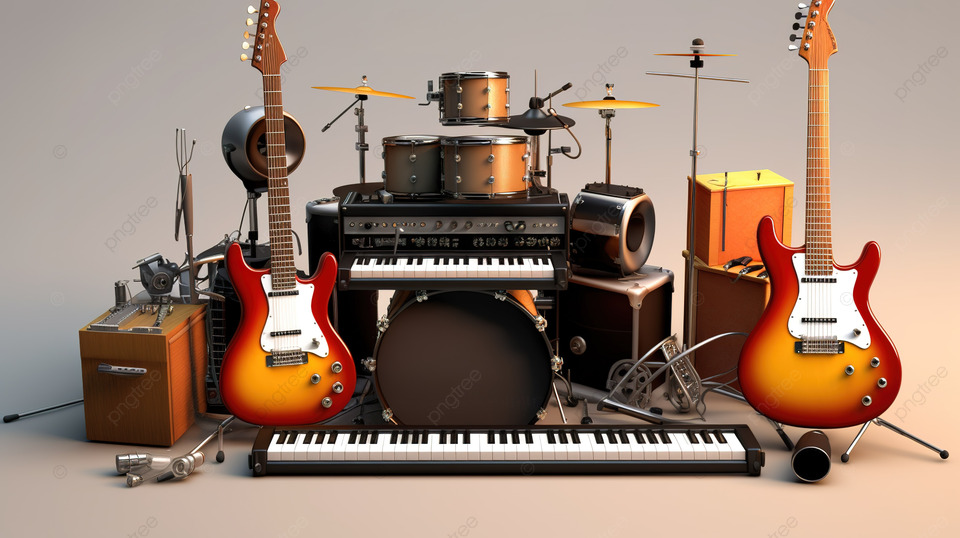
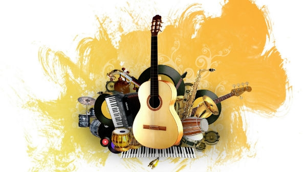

NovidadesConfira as últimas novidades e ofertas especiais! |
 |
Como Comprar
|
Glossário Musical
|
 |
Sobre Nós
Bem-vindo à Tags Instrumentos! Oferecemos uma ampla variedade de instrumentos musicais de alta qualidade para músicos de todos os níveis. Nossa missão é proporcionar uma experiência de compra excepcional, com atendimento personalizado e produtos que atendam às suas necessidades musicais.
Visite nossa loja e descubra como podemos ajudar você a alcançar seus sonhos musicais!